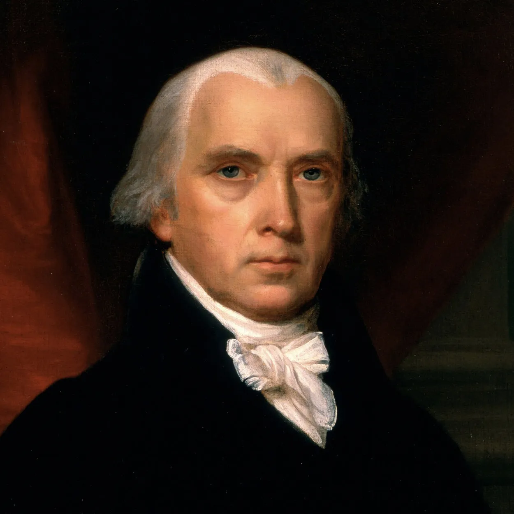

| Date Ratified | December 15, 1791 |
| Important Figures | James Madison |
| Last State to Ratify | Virginia* |
| Fundamental Focus | Unenumerated Rights |
Directly from the constitution, the 9th amendment is, "The enumeration in the Constitution, of certain rights, shall not be construed to deny or disparage others retained by the people."
In simpler terms, this statement is allowing for the possibility that some offenses may not be directly mentioned in the Constitution, yet that they are still to be punishable by law. This was directly stated in the Constitution because many feared that with a Bill of Rights came the implication that any other rights are not to be protected.
The Bill of Rights is a document of the first 10 constitution amendments which are meant to express the rights of citizens in the U.S. When the Constitution was originally ratified, it did not include a Bill of Rights because the founding fathers feared that explicitly expressing only some laws would imply that others should not be protected by the law.
Unlike other amendments in the Bill of Rights, the 9th was ratified solely for the purpose of confirming that even if not mentioned in the other amendments, all rights-violating crimes are punishable by law.
| As a founding father and fourth president of the U.S., James Madison was one of the only supporters of the inclusion of a bill of rights and the ninth amendment. He is often credited with these achievements, as he played a major role in persuading the federalists to agree with the bill. The success of initiating the bill would be a major selling-point for Madison's presidency lasting from 1809-1817. |  |
In addition to providing some legal guidance for the many crimes that are not included in the Bill of Rights, the ninth amendment also provides presidence for offenses that could not have been considered by the founding fathers.
For example, if someone were to torment someone else online, this exact case could not be solved by simply viewing the Bill of Rights because it was not considered in 1791.
In this case, the court decided to ban the use of contraceptives in Connecticut They incorporated the ninth amendment by claiming that although not strictly under the jurisdiction of the Constitution, the rights of unborn fetuses fall under the category of unenumerated rights.
While the Bill of Rights and the ninth amendment were officially ratified December 15, 1791 when Virginia sent in its ballot in favor of the Bill, there were three straggler states who had not yet done so.
As only 3/4 state approval was required, this did not actually affect the bill passing, but on its 150th anniversary, Massachusetts, Connecticut, and Georgia symbolically sent in their ballots to ratify the bill.